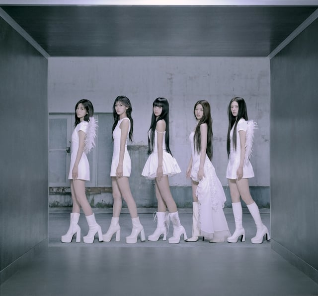
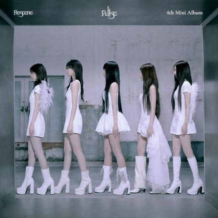

RESCENE / PULSE01 — 05


THE NEW CHAPTERFeel the Pulse.RESCENE 4th Mini Album
THE TRACKS 하이라이트 듣기
FIVE DIFFERENT LIGHTS
다섯 개의 빛.
멤버를 누르면 출연 영상을 모아볼 수 있어요.
ON SCREEN, RIGHT NOW
새로운 장면들.
필터
멤버
영상을 불러오는 중…